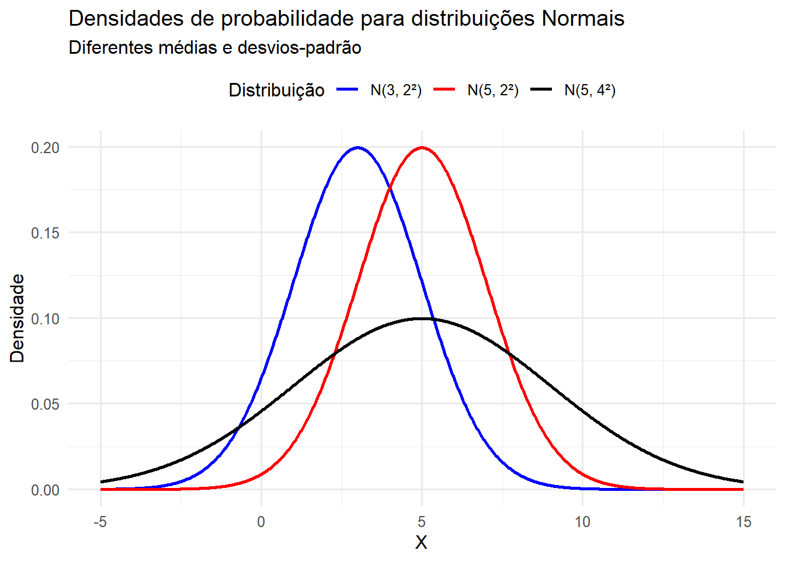

library(dplyr)
library(tidyr)
library(ggplot2)
library(readr)Estatística e Introdução à Econometria
Versão 3.0
Apresentação
Este material tem finalidade didática, tratando-se de uma apostila de apoio aos meus alunos da graduação e da extensão. Ele nasceu do meu desejo de organizar um livro de estatística na medida suficiente para o uso por estudantes de econometria (nem mais, nem menos: na medida certa). O texto e as práticas com R vêm sendo desenvolvidos gradativamente a partir dos conteúdos (slides, textos, scripts em R, minhas anotações de estudos e outros materiais) utilizados nas minhas aulas da graduação desde 2014 e nos cursos de extensão desde 2017 no Instituto de Economia da Unicamp.
O principal objetivo é sumarizar os conceitos fundamentais de estatística aplicados à econometria, servindo como uma introdução à modelagem econométrica. Pretende-se que seu conteúdo cubra desde os princípios básicos da estatística inferencial até os fundamentos do modelo clássico de regressão linear.
Ao final, encontra-se uma lista com os livros-texto recomendados por mim, que foram fundamentais para a organização do roteiro e do conteúdo desta versão preliminar.
Este material está em constante processo de revisão e ampliação. Caso você identifique algum erro ou tenha sugestões, agradecerei se puder compartilhar comigo pelo endereço mjustus@unicamp.br.
Declaração de uso de inteligência artificial generativa
Os códigos em R utilizados neste material foram elaborados com base em exemplos apresentados em livros de Estatística e Econometria com R, bem como em adaptações didáticas desenvolvidas especificamente para os objetivos da disciplina.
Na preparação das práticas computacionais, especialmente dos exercícios de simulação, foi utilizada a assistência da ferramenta de inteligência artificial generativa ChatGPT, da OpenAI, exclusivamente como apoio à implementação, à organização e ao refinamento técnico dos códigos. A ferramenta também foi empregada como apoio à revisão gramatical, estrutural e formal do texto, com o objetivo de aprimorar a clareza, a legibilidade e a objetividade da exposição.
O uso da inteligência artificial generativa restringiu-se a atividades auxiliares de apoio técnico e formal, sem substituição da elaboração intelectual, da autoria humana ou da responsabilidade docente pelo conteúdo. A definição dos objetivos didáticos, a seleção dos temas, a construção dos exercícios, a supervisão conceitual, a validação dos códigos, a interpretação dos resultados e a forma final do material permaneceram integralmente sob responsabilidade do docente responsável.
Todos os resultados, códigos e trechos textuais produzidos com apoio da ferramenta foram revisados criticamente, linha por linha e trecho por trecho, com base em fontes confiáveis e no conhecimento técnico da área, a fim de assegurar correção estatística, consistência econométrica, adequação didática e conformidade com os princípios de integridade acadêmica.
Esta declaração é feita em observância às diretrizes institucionais da Unicamp sobre o uso ético, transparente, responsável e seguro de inteligência artificial generativa em atividades acadêmicas..
Parte I — A natureza da econometria e dos dados
1 Introdução
A nossa discussão começa com uma frase muito conhecida de Angrist e Pischke, no livro clássico de 2015, recomendado a quem deseja se tornar economista empírico ou conhecer melhor a econometria empírica e aplicada.
“A economia é empolgante; é tão excitante quanto qualquer outra ciência pode ser. O mundo é o nosso laboratório, e as muitas pessoas que nele vivem são os nossos sujeitos de análise. A empolgação, a emoção do nosso trabalho como economistas, vem da oportunidade de estudar as relações de causa e efeito nos assuntos humanos.”
Essa frase serve como ponto de partida para a compreensão dos principais fundamentos que estruturam a econometria.
Este capítulo apresenta e discute a natureza da economia, da econometria e dos dados. O objetivo é compreender o que é econometria e qual é o seu papel dentro da economia e de outras áreas do conhecimento. Também se busca diferenciar modelos econômicos teóricos, modelos matemáticos, modelos estatísticos e modelos econométricos. Por fim, o capítulo apresenta a lógica de construção dos modelos econométricos.
Neste capítulo, a atenção recai principalmente sobre a distinção entre correlação e causalidade. Compreender essa diferença é um passo fundamental para entender a natureza da econometria. Também se discute o papel da condição ceteris paribus, isto é, a hipótese de que as demais condições permanecem constantes, tanto na construção dos modelos teóricos quanto na identificação empírica de relações causais por meio da econometria.
2 A natureza da econometria
A discussão começa pela definição de econometria. Uma das definições mais clássicas, com diferentes formulações na literatura, afirma que a econometria consiste no uso de métodos estatísticos para dar conteúdo empírico às teorias econômicas. Essa definição destaca a principal missão da econometria e do economista aplicado: transformar teorias sobre o comportamento humano e sobre relações comportamentais em hipóteses empiricamente testáveis, com o uso de estatística e dados.
Econometria, portanto, não se resume a “rodar regressões”. É muito comum, no início dos estudos em economia, que estudantes façam referência a expressões como “estou estimando um modelo de regressão”, “ajustei um modelo de regressão”, “estou rodando uma regressão” ou “quais dados são necessários para estimar a minha regressão?”.
A regressão é uma técnica, isto é, uma das ferramentas da econometria. Em sentido mais preciso, estimam-se parâmetros de modelos formulados a partir de uma teoria, de uma pergunta de pesquisa e de uma estratégia empírica. Esses modelos, estimados com dados e metodologias específicas, permitem investigar possíveis relações entre variáveis, inclusive relações causais, quando as hipóteses de identificação são defensáveis.
A econometria também pode ser usada com finalidade descritiva e preditiva. Contudo, uma de suas preocupações centrais, especialmente na econometria aplicada moderna, é avaliar relações de causa e efeito. Trata-se de uma disciplina científica voltada à modelagem empírica de fenômenos reais, desenvolvida na interseção entre economia, matemática, estatística, dados e recursos computacionais. Suas ferramentas são utilizadas em várias áreas do conhecimento, sempre que há interesse em compreender relações empíricas, testar hipóteses, fazer previsões, avaliar políticas ou orientar decisões sob incerteza.
Diversas profissões utilizam ferramentas desenvolvidas pela econometria e evidências produzidas por economistas empíricos para lançar luz sobre relações comportamentais em seus respectivos campos. Por essa razão, a econometria é muito mais do que simplesmente aplicar estatística a dados econômicos. Também é muito mais do que “rodar regressões”. A econometria constitui um campo científico próprio, com fundamentos teóricos, métodos estatísticos, estratégias de identificação e critérios de validação empírica.
A discussão avança, então, para os componentes centrais da econometria, com o objetivo de compreender o papel dos economistas e a importância dessa formação para a análise empírica rigorosa.
2.1 Componentes centrais da econometria
Quais são os componentes que fundamentam a econometria? Quais áreas se combinam para que estudos econométricos sejam bem formulados e produzam evidências robustas?
O primeiro componente é a teoria econômica. A teoria fornece as hipóteses substantivas sobre as relações entre variáveis. Em muitos casos, essas hipóteses são causais e precisam ser confrontadas com os dados. A teoria, portanto, orienta a formulação da pergunta de pesquisa, a escolha das variáveis relevantes e a interpretação dos resultados.
O segundo componente é a matemática. A estrutura matemática permite expressar relações comportamentais por meio de funções, equações e sistemas formais. Desse modo, a matemática formaliza as relações entre variáveis, explicita as hipóteses do modelo e permite compreender sua estrutura lógica.
Entretanto, a econometria não se reduz à matemática. Econometria não é apenas economia matemática. A natureza da economia matemática, por exemplo, é discutida por Chiang e Wainwright em Matemática para Economistas, especialmente no capítulo introdutório. A diferença é essencial: enquanto um modelo matemático pode representar relações determinísticas, os fenômenos econômicos e sociais são, em geral, influenciados por muitos fatores. Alguns são conhecidos; outros, desconhecidos. Alguns são observáveis; outros, não observáveis, no sentido de que não podem ser diretamente medidos ou quantificados para inclusão no modelo.
É nesse ponto que entra o papel da estatística. A estatística permite incorporar a incerteza inerente aos modelos empíricos. Essa incerteza decorre da variabilidade dos dados, da imperfeição das medidas, da presença de fatores omitidos, da existência de choques aleatórios e do desconhecimento completo sobre todos os determinantes do fenômeno analisado. A inferência estatística é o instrumento que permite avaliar se os resultados obtidos são compatíveis com as hipóteses formuladas e qual é o grau de incerteza associado às estimativas.
Além da teoria, da matemática e da estatística, a econometria exige dados. Os dados são as observações utilizadas para estimar, testar e avaliar empiricamente as relações investigadas. Sem dados, não há passagem efetiva do modelo teórico para a evidência empírica.
Deve-se destacar a palavra “observações”. Na maior parte das aplicações em economia, trabalha-se com dados observacionais. Raramente há a possibilidade de conduzir experimentos plenamente controlados, como ocorre em algumas ciências de laboratório. Em geral, os economistas observam dados produzidos por processos sociais, econômicos e institucionais que já ocorreram ou estão em curso. Esses dados resultam de um processo gerador de dados, muitas vezes complexo, no qual várias forças atuam simultaneamente.
Esse ponto é fundamental para distinguir a econometria de outras ciências aplicadas que conseguem realizar experimentos controlados com maior frequência. Em economia e em outras ciências sociais, a identificação de relações causais exige estratégias empíricas capazes de aproximar, sob condições defensáveis, a comparação que seria obtida em um experimento ideal.
2.2 Do modelo teórico à evidência empírica
A próxima etapa consiste em compreender o que é um modelo econométrico. Um exemplo clássico entre economistas é a chamada “lei da demanda”. A teoria econômica afirma que, ceteris paribus, quando o preço de um bem aumenta, sua quantidade demandada tende a diminuir. A econometria pergunta: quanto a quantidade demandada diminui? Qual é a magnitude dessa relação? Esse efeito é estatisticamente significante? A evidência é suficientemente confiável para orientar decisões de preço, regulação ou política pública?
Observe-se a passagem da teoria econômica para a economia aplicada. A teoria afirma: quando o preço aumenta, a quantidade demandada se reduz, mantidas constantes as demais condições relevantes. A economia aplicada pergunta: qual é a magnitude dessa redução? Essa redução pode ser estimada com dados? A estimativa é estatisticamente precisa? A interpretação causal é defensável?
Nesse momento, torna-se mais clara a natureza empírica da econometria. A econometria busca testar hipóteses econômicas e hipóteses oriundas de outras áreas do conhecimento, desde que estejam teoricamente bem estruturadas. Para isso, utiliza dados, modelos com estrutura matemática, métodos estatísticos e estratégias de identificação. O objetivo é avaliar se as relações presumidas teoricamente encontram sustentação empírica no mundo real.
Em síntese, a econometria surge da interseção entre teoria econômica, matemática e estatística. Os dados são sua matéria-prima, isto é, o insumo principal dos modelos econométricos. É a partir dos dados que se torna possível aprender sobre relações comportamentais e, sob condições adequadas, sobre relações de causa e efeito em assuntos humanos.
Cabe um esclarecimento importante: econometria não é sinônimo de ciência de dados, e ciência de dados não se confunde com econometria. Há interseções relevantes entre as duas áreas, sobretudo no uso de dados, métodos computacionais e técnicas estatísticas. Contudo, a econometria se caracteriza pela combinação entre teoria substantiva, estrutura matemática, inferência estatística e preocupação explícita com identificação, especialmente quando o objetivo é sustentar interpretações causais.
Antes de estudar métodos sofisticados e o estado da arte da econometria aplicada moderna, é necessário compreender o que se busca com a econometria, qual é sua essência e por que ela é utilizada. A teoria econômica, ou outra teoria substantiva, formula hipóteses sobre relações entre variáveis. A matemática formaliza essas relações por meio de funções e equações. Os dados permitem observar manifestações empíricas dessas relações. A estatística fornece as ferramentas para estimar, testar e avaliar a incerteza associada aos resultados. A identificação empírica, por sua vez, permite discutir se as relações estimadas podem ser interpretadas como causais.
Nesse sentido, um bom treinamento em estatística inferencial é indispensável à formação de um econometrista, pois dá rigor científico à avaliação dos modelos empíricos. Sem um referencial teórico consistente, preferencialmente estruturado de forma matemática quando isso for possível, o trabalho econométrico corre o risco de se tornar ingênuo ou meramente especulativo. Em alguns casos, exercícios exploratórios de associação entre variáveis podem ajudar a formular hipóteses, especialmente quando ainda não há uma teoria bem desenvolvida sobre a relação investigada. Contudo, sempre que houver uma teoria de base, econômica ou de outra natureza, o modelo econométrico deve ser estruturado a partir dela, pois é da teoria que se derivam hipóteses empiricamente testáveis.
Mais uma vez, sem um referencial teórico consistente, a econometria corre o risco de se reduzir a um estudo de associações entre variáveis. Sem estatística, não há avaliação rigorosa da incerteza. Sem dados, não há evidência empírica. E sem uma estratégia de identificação adequada, não há base suficiente para sustentar interpretações causais. A econometria, portanto, deve ser entendida como uma disciplina científica, e não apenas como uma coleção de técnicas estatísticas.
2.3 Tipos de modelos: econômico, matemático e estatístico
É importante distinguir os principais tipos de modelos utilizados na análise econométrica, pois é comum que a econometria seja confundida com estatística aplicada ou com economia matemática. Embora dialogue com ambas, a econometria não se reduz a nenhuma delas.
2.3.1 Modelo teórico
Um modelo econômico teórico é construído a partir de hipóteses sobre o comportamento humano e expressa relações presumidas entre variáveis. Todos os modelos teóricos dependem de hipóteses. Um exemplo clássico é a teoria do consumidor.
Da teoria do consumidor deriva-se a lei da demanda. Essa lei afirma que, ceteris paribus, se o preço de um bem aumenta, sua quantidade demandada tende a diminuir, ainda que a própria microeconomia reconheça situações específicas em que essa regularidade pode não se verificar de forma simples. A teoria sustenta essa relação com base em hipóteses fundamentais, como o princípio da racionalidade do consumidor e os axiomas que fundamentam a teoria neoclássica da escolha. Em termos matemáticos, pode-se representar essa relação como:
\[ Q^d = f(P), \qquad f'(P) < 0 \]
Essa expressão indica que a quantidade demandada depende do preço e que a relação esperada entre preço e quantidade demandada é negativa.
2.3.2 Modelo matemático com forma funcional expressa
O modelo matemático formaliza essas relações por meio de equações. Por exemplo, a quantidade demandada de determinado produto, \(Q^d\), pode ser representada como uma função linear do preço, \(P\):
\[ Q^d = 𝑎 − 𝑏𝑃 \]
Essa expressão é uma equação matemática linear. Nela, \((a)\) e \((b)\) são parâmetros, e \((P)\) é a variável explicativa. A equação expressa que o preço está associado à quantidade demandada e que essa relação é negativa quando \((b > 0)\). Se os parâmetros fossem conhecidos, seria possível obter a quantidade demandada correspondente a determinado preço de forma determinística. Contudo, como se trata de uma representação teórica, seus parâmetros precisam ser estimados com dados e sua aderência empírica precisa ser avaliada.
Além do preço do próprio bem, há várias outras variáveis que influenciam o comportamento do consumidor e sua decisão de consumo. Entre elas, estão o preço de bens substitutos, o preço de bens complementares e a renda do consumidor, que é uma das principais determinantes de sua capacidade de compra. A renda, em conjunto com os preços dos bens, define a restrição orçamentária do consumidor. A microeconomia também ensina que expectativas, sazonalidade, padrões de referência de consumo, preferências, instituições e outras variáveis podem ser relevantes para explicar a quantidade demandada.
2.3.3 Modelo estatístico
O modelo estatístico incorpora a incerteza inerente aos fenômenos empíricos. Ele considera a variabilidade das observações, as imperfeições na coleta dos dados, os erros de medida e o desconhecimento sobre todos os determinantes de determinada variável. Quais são os determinantes da quantidade demandada de um bem? Em alguns casos, a teoria econômica permite listar as principais variáveis relevantes. Ainda assim, há fatores menos
relevantes, fatores difíceis de observar e fatores importantes que não podem ser medidos diretamente. Questões culturais, religiosas, institucionais, psicológicas ou relacionadas à confiança, por exemplo, podem afetar a demanda por certos bens, mas nem sempre são observáveis ou mensuráveis de forma adequada. Tudo isso introduz incerteza na determinação da quantidade demandada. Portanto, a relação entre quantidade demandada e preço não deve ser tratada como puramente determinística. Em termos empíricos, ela deve ser representada como uma relação estocástica. A estatística e a econometria, sob hipóteses específicas, permitem controlar outros fatores relevantes. Ainda assim, mesmo que fossem incluídas variáveis como renda, preço de bens substitutos e preço de bens complementares, permaneceria algum grau de incerteza. A expressão “controlar outros fatores” será fundamental ao longo de todo o estudo da econometria. Para lidar com essa incerteza, pode-se escrever um modelo estatístico geral. Seja \((Y)\) a quantidade demandada e \((X)\) o preço de determinado bem:
\[ Y = \beta_0 + \beta_1 X + u \]
Nesse modelo, \(\beta_0\) e \(\beta_1\) são parâmetros desconhecidos, que precisam ser estimados com dados. O termo \((u)\) é o erro ou termo estocástico do modelo. Ele representa a parte de \((Y)\) que não é explicada por \((X)\) e pode incluir fatores omitidos, choques aleatórios, erros de medida e outros elementos não capturados explicitamente pela especificação. Essa estrutura, isoladamente, ainda não garante uma interpretação econométrica causal. A presença de um termo de erro não transforma automaticamente uma equação em um modelo econométrico causal. Para que o modelo tenha conteúdo econométrico substantivo, é necessário que esteja vinculado a uma teoria, a uma pergunta empírica, a dados adequados, a hipóteses estatísticas e, quando o objetivo for causal, a uma estratégia de identificação defensável. A variável \((Y)\) é usualmente chamada de variável dependente, variável resposta ou regressando. Em alguns contextos específicos, especialmente em modelos estruturais ou sistemas de equações simultâneas, também pode ser chamada de variável endógena. A variável \((X)\), por sua vez, pode ser chamada de variável explicativa, regressor ou covariada. A terminologia deve sempre ser usada de acordo com o contexto do modelo.
O que transforma um modelo estatístico em modelo econométrico
O que transforma um modelo estatístico em um modelo econométrico? Em primeiro lugar, a teoria. A estrutura matemática já existe, pois há uma equação relacionando variáveis. Também há parâmetros desconhecidos, como \((X_0)\) e \((X_1)\) que podem ser estimados com dados. Contudo, a estimação de uma equação não é suficiente para caracterizar uma análise econométrica rigorosa. Com dados de \((Y)\) e \((X)\), por exemplo, quantidade demandada e preço, pode-se estimar o modelo por diferentes métodos. Mas, para que esse modelo sustente uma interpretação causal entre preço e quantidade demandada, é necessário mais do que ajustar uma regressão. É preciso que a relação esteja teoricamente fundamentada, que as variáveis relevantes sejam consideradas, que as hipóteses estatísticas sejam explicitadas e que a estratégia de identificação aproxime, de modo plausível, a condição ceteris paribus. Uma parte importante desse processo consiste em retirar do termo de erro variáveis observáveis relevantes e incluí-las explicitamente no modelo como variáveis de controle. No exemplo da demanda, isso significa controlar, sempre que possível, renda, preço de bens substitutos, preço de bens complementares, sazonalidade, características dos consumidores e outros fatores observáveis que afetam a quantidade demandada.
Contudo, o controle de variáveis observáveis não resolve todos os problemas. Sempre pode haver fatores não observáveis relevantes. Por isso, a econometria desenvolveu técnicas voltadas a lidar com problemas de endogeneidade, variáveis omitidas, seleção, causalidade reversa e confundimento. Entre essas técnicas, estão estratégias baseadas em experimentos naturais, variáveis instrumentais, diferenças em diferenças, descontinuidade de regressão, efeitos fixos e outros métodos usados para aproximar a condição ceteris paribus. Portanto, o modelo econométrico permite testar hipóteses, estimar magnitudes, fazer predições, produzir previsões e, quando as hipóteses de identificação são defensáveis, sustentar interpretações causais. Para isso, utiliza teoria, dados, estatística, métodos de estimação, recursos computacionais e uma estratégia empírica coerente. Em síntese, parte-se da teoria econômica para o modelo matemático. Do modelo matemático, passa-se a uma estrutura estatística. Essa estrutura somente se torna um modelo econométrico substantivo quando está vinculada a uma teoria, a uma pergunta empírica clara, a dados adequados, a hipóteses estatísticas explícitas e a uma metodologia capaz de sustentar a interpretação pretendida. Assim, é essencial distinguir um modelo meramente estatístico de um modelo econométrico. O modelo econométrico exige fundamentação teórica e estratégia empírica. Exige também cuidado com a escolha das variáveis, com a interpretação dos parâmetros e com a validade das inferências. Sobretudo quando o objetivo é produzir evidências causais, os resultados precisam ser sustentados simultaneamente pela teoria, pelos dados, pela estatística e por hipóteses de identificação plausíveis.
3 Correlação versus causalidade: o grande desafio da econometria
O maior desafio do economista moderno, sem dúvida, não é apenas obter dados. Em muitos contextos, esse já foi um obstáculo maior do que é atualmente. Também não é, necessariamente, a estrutura matemática, pois muitos estudos aplicados exigem apenas um conjunto bem delimitado de conceitos matemáticos. Tampouco é o uso de programas computacionais para estimação de modelos simples ou complexos, uma vez que os recursos computacionais disponíveis tornaram essa tarefa muito mais acessível, especialmente com o avanço recente das ferramentas de inteligência artificial.
O maior desafio do economista empírico é separar correlação de causalidade. Não se trata apenas de compreender a diferença conceitual entre esses dois termos, mas de conseguir separá-los empiricamente.
A correlação mede associação estatística entre duas variáveis. Por isso, correlação não é causalidade. Duas variáveis podem estar correlacionadas sem que uma cause a outra. Da mesma forma, a existência de uma hipótese causal teoricamente plausível não é suficiente para concluir que a relação observada nos dados é causal. Para isso, é necessário demonstrar que a associação empírica não decorre de fatores omitidos, causalidade reversa, seleção, confundimento ou outras fontes de viés.
A causalidade exige raciocínio contrafactual. A pergunta central é: o que teria acontecido com \((Y)\) se \((X)\) tivesse sido diferente? A causalidade implica que uma mudança em \((X)\), mantidas constantes as demais condições relevantes, provoca uma mudança em \((Y)\). Essa é a base da condição ceteris paribus.
Há exemplos conhecidos de correlação espúria, como os reunidos por Tyler Vigen. Os exemplos de correlação espúria apresentados por Tyler Vigen são hilários, mas também muito úteis didaticamente para mostrar que correlação não implica causalidade. Correlação espúria ocorre quando há uma associação estatística entre duas variáveis, mas não há relação causal direta entre elas. Isso pode decorrer de mera coincidência, de tendências comuns ou da presença de um terceiro fator, chamado confundidor. Em muitas aplicações empíricas, esse problema está associado à omissão de variáveis relevantes.
Um exemplo clássico é a relação entre a quantidade vendida de sorvetes e o número de afogamentos. As duas variáveis tendem a aumentar no verão. Portanto, é possível observar uma associação positiva entre elas em períodos de maior temperatura. No entanto, essa associação não representa uma relação causal direta. Mais sorvetes vendidos não causam mais afogamentos. O fator comum é a temperatura: no verão, as pessoas compram mais sorvete e também frequentam mais piscinas, praias, rios e outros locais de banho. Nesse caso, a correlação decorre de um terceiro fator omitido.
O foco da econometria aplicada moderna é usar teoria, métodos, modelos e dados para identificar relações causais com sustentação estatística, mesmo quando se dispõe apenas de dados observacionais. Na maior parte das aplicações em economia, não há laboratório controlado. Como lembram Angrist e Pischke, o mundo é o laboratório, e as pessoas que nele vivem são os sujeitos de análise. A econometria precisa lidar com essa condição imperfeita.
Outro exemplo clássico é a relação entre educação e salário. A pergunta causal é: educação aumenta o salário? Teoricamente, a resposta esperada é sim. Entretanto, há outras variáveis relevantes que também afetam o salário, como habilidade, experiência, idade, região, setor de ocupação, origem familiar e motivação. Para isolar o efeito da educação, é necessário controlar esses fatores ou utilizar uma estratégia empírica capaz de aproximar uma comparação contrafactual adequada. Essa é a função das variáveis de controle e, em muitos casos, dos métodos quase-experimentais. Quando aplicados corretamente e com bons dados, esses métodos podem aproximar a lógica de um experimento controlado.
Aproximar a condição ceteris paribus é uma condição central para sustentar interpretações causais. No exemplo da lei da demanda, a formulação correta é: a quantidade demandada tende a se reduzir quando o preço aumenta, ceteris paribus. Isso significa que as demais condições relevantes devem ser mantidas constantes ou adequadamente consideradas na análise.
Portanto, quando se avalia o efeito de uma variável sobre outra, é fundamental considerar os demais fatores relevantes. No modelo teórico, a condição ceteris paribus pode ser assumida. Na modelagem empírica, porém, ela precisa ser sustentada por meio de dados, especificação adequada, controles relevantes e estratégia de identificação.
No mundo real, em geral, não há laboratórios plenamente controlados. A econometria busca aproximar o experimento ideal por meio de estratégias de identificação.
Mas o que é uma estratégia de identificação? Em termos simples, é o conjunto de argumentos, hipóteses e procedimentos metodológicos que permite passar de associações observadas nos dados para uma interpretação causal. A estratégia de identificação procura mostrar por que determinada comparação empírica pode ser interpretada como uma aproximação válida do contrafactual.
Sem alguma forma defensável de aproximação da condição ceteris paribus, não há identificação causal. Nesse caso, é possível falar em associação ou correlação entre variáveis, mas não em relação causal. A identificação causal, portanto, é um dos pontos centrais da econometria aplicada.
Quais obstáculos precisam ser enfrentados? Um dos mais importantes é o viés de seleção. Esse problema ocorre quando a exposição ao tratamento, à política ou à intervenção não é aleatória. Em dados observacionais, indivíduos, empresas, municípios ou países frequentemente se selecionam ou são selecionados para determinado tratamento com base em características que também afetam o resultado de interesse.
Há também o viés de variável omitida, que surge quando fatores relevantes para explicar o resultado são deixados fora do modelo. No caso da demanda de um bem explicada apenas pelo preço do próprio bem, variáveis omitidas relevantes podem incluir o preço de bens complementares, o preço de bens substitutos e a renda do consumidor. Esses fatores influenciam a demanda e podem distorcer a estimativa da relação entre preço e quantidade demandada. No caso da relação entre educação e salários, a omissão de variáveis como experiência, habilidade, motivação ou origem familiar também pode gerar viés no estimador.
Esses obstáculos precisam ser enfrentados com bons dados, teoria substantiva e metodologias econométricas adequadas. Esse é o caminho que leva dos números brutos ao conhecimento causal relevante. Ter dados é apenas o primeiro passo. Dados precisam ser transformados em informação, e informação precisa gerar conhecimento científico útil. O caminho entre dados brutos e respostas causais é longo.
Pesquisas descritivas são úteis e muitas vezes indispensáveis. No entanto, quando a pergunta de pesquisa é causal, a análise precisa ir além da descrição. Como se atribui a W. Edwards Deming, “Em Deus nós confiamos; todos os outros devem trazer dados”. Ainda assim, é preciso cuidado: a diferença entre contar histórias com dados e produzir evidência científica robusta está na capacidade de sustentar, quando for o caso, uma interpretação causal defensável.
Há várias metodologias para aproximar um experimento controlado e produzir evidências sobre relações causais, e não apenas correlacionais. Frequentemente, utilizam-se modelos de regressão com variáveis de controle observáveis. Também são usados modelos de dados em painel, que podem controlar fatores não observáveis constantes no tempo, desde que as hipóteses do modelo sejam plausíveis.
Entre os métodos amplamente utilizados na econometria aplicada moderna, destacam-se os modelos de diferenças em diferenças. Esses modelos são úteis quando há grupos tratados e não tratados observados antes e depois de uma intervenção, desde que a hipótese de tendências paralelas seja defensável. Portanto, diferenças em diferenças não é uma metodologia automaticamente superior. Ela é recomendável quando o desenho empírico e os dados são compatíveis com suas hipóteses de identificação.
Também há aplicações de regressão com descontinuidade, método originalmente introduzido na literatura de avaliação em 1960. Nesse caso, a identificação causal decorre da comparação entre unidades situadas muito próximas de um ponto de corte que define a exposição ao tratamento. Há, ainda, o método de controle sintético, desenvolvido a partir dos trabalhos de Abadie e Gardeazabal e posteriormente sistematizado por Abadie, Diamond e Hainmueller. Esse método constrói uma unidade contrafactual sintética a partir de uma combinação ponderada de unidades não tratadas, buscando aproximar o comportamento que a unidade tratada teria apresentado na ausência da intervenção.
Outras metodologias importantes incluem variáveis instrumentais, pareamento por escore de propensão, modelos de efeitos fixos, regressão descontínua, controle sintético e diferentes combinações entre métodos. A escolha da metodologia deve depender da pergunta de pesquisa, da estrutura dos dados, da natureza da intervenção, das hipóteses de identificação e das ameaças à validade causal.
De forma geral, os métodos de avaliação causal podem ser classificados em experimentais e não experimentais. Os métodos experimentais, baseados em aleatorização, são frequentemente tratados como padrão de referência na avaliação de impacto. Os métodos não experimentais, por sua vez, buscam aproximar a comparação contrafactual por diferentes estratégias. Alguns se apoiam principalmente na seleção por observáveis, como regressões com controles e pareamento por escore de propensão. Outros exploram variação institucional, temporal, espacial ou quase aleatória, como diferenças em diferenças, variáveis instrumentais, regressão descontínua e controle sintético. Em aplicações reais, esses métodos podem ser combinados, desde que a combinação seja coerente com a pergunta de pesquisa e com as hipóteses de identificação.
4 A natureza dos dados
Retomemos a discussão sobre os dados. Para estimar relações causais, são necessários dados adequados à pergunta de pesquisa e à estratégia de identificação. Em muitas aplicações da economia, esses dados são observacionais, isto é, não resultam de experimentos controlados. Como se atribui a W. Edwards Deming, “Em Deus nós confiamos; todos os outros devem trazer dados”. Contudo, é preciso cautela: não bastam quaisquer dados.
Dados podem conter erros de medida, inconsistências, omissões, problemas de cobertura, mudanças metodológicas e limitações de comparabilidade. Por isso, é fundamental conhecer suas características, propriedades e limitações. Nem toda pergunta pode ser respondida com qualquer base de dados. A resposta possível depende do tipo de dado utilizado, da qualidade da mensuração, da unidade de observação, da dimensão temporal, da granularidade e da estratégia empírica disponível.
Portanto, é preciso cautela diante da afirmação de que “os dados falam por si”. Dados não falam por si. Dados são matéria-prima para a construção de conhecimento por meio de métodos científicos.
Os dados são a fonte da evidência empírica, isto é, o principal insumo da modelagem econométrica. Mas como os dados produzem informação? A resposta está na variação. A variabilidade dos dados é fonte de informação estatística. Em sentido amplo, a estatística pode ser entendida como a análise da variabilidade dos dados.
Sem variação relevante, não há como estimar relações entre variáveis. Se uma variável explicativa \((X)\) não varia, não é possível estimar seu efeito sobre uma outra variável \((Y)\). Contudo, a existência de variação em \(X\) não basta para identificar uma relação causal. Para isso, a variação precisa ser informativa, isto é, precisa estar associada a uma estratégia de identificação capaz de isolar o efeito de \(X\) sobre \(Y\), afastando explicações alternativas.
A identificação de um efeito depende, portanto, da natureza da pergunta, das características dos dados e da plausibilidade das hipóteses de identificação. É por isso que o tipo de dado disponível define o que pode, e o que não pode, ser respondido empiricamente.
Quais tipos de dados podem ser utilizados? Em economia aplicada, é comum trabalhar com dados de corte transversal, séries temporais, dados longitudinais e dados em painel. Cada estrutura oferece fontes distintas de variação e impõe limitações específicas à análise.
4.1 A dimensão dos dados: a fonte de variação
4.1.1 Corte transversal
Dados de corte transversal, também chamados de cross-section, reúnem muitas unidades observadas em um mesmo ponto do tempo ou em um mesmo período de referência. Essas unidades podem ser pessoas, famílias, domicílios, empresas, bairros, municípios, microrregiões, estados ou países.
Nesse tipo de dado, a principal fonte de variação está nas diferenças entre unidades. Por exemplo, pode-se comparar renda, escolaridade, taxa de desemprego ou taxa de criminalidade entre indivíduos, domicílios, municípios ou estados em determinado ano.
Em bases de corte transversal, muitas variáveis podem ter sido coletadas em períodos próximos, ainda que não exatamente no mesmo dia ou mês. O ponto fundamental é que não há uma dimensão temporal suficientemente estruturada para acompanhar a evolução das mesmas unidades ao longo do tempo. Essa é uma limitação importante, pois impede a análise direta de dinâmicas temporais, persistência, defasagens e mudanças antes e depois de eventos.
Exemplos de dados de corte transversal incluem informações do Censo Demográfico em determinado ano, variáveis da PNAD Contínua em um período específico, taxas de criminalidade municipais em um único ano e taxas de desemprego por unidades federativas em determinado período.
4.1.2 Séries temporais
Uma série temporal é formada pela observação de uma mesma unidade ao longo do tempo. Nesse caso, a principal fonte de variação está na dimensão temporal. Diferentemente dos dados de corte transversal, não há comparação entre muitas unidades no mesmo período, mas sim a análise da evolução de uma variável, ou de um conjunto de variáveis, ao longo do tempo.
As séries temporais permitem estudar dinâmica, persistência, tendências, sazonalidade, ciclos, quebras estruturais e relações com defasagens temporais. Essa é uma de suas principais vantagens.
Por outro lado, séries temporais podem ter número limitado de observações, especialmente quando a frequência é anual. Em frequência trimestral, mensal, semanal ou diária, o número de observações tende a ser maior, o que pode ampliar as possibilidades de análise. Ainda assim, séries temporais exigem cuidados específicos, como estacionariedade, autocorrelação, sazonalidade, mudanças estruturais e dependência temporal.
Exemplos de séries temporais incluem o PIB anual do Brasil, a inflação mensal, a taxa de câmbio diária, a taxa Selic ao longo do tempo e a taxa mensal de desemprego.
4.1.3 Dados longitudinais
Dados longitudinais acompanham as mesmas unidades ao longo do tempo. Quando há muitas unidades observadas em vários períodos, é comum usar a expressão dados em painel. Essa estrutura combina duas fontes de variação: a variação entre unidades e a variação ao longo do tempo.
Essa combinação é especialmente valiosa para a econometria aplicada, pois permite explorar diferenças entre unidades, mudanças dentro das unidades ao longo do tempo e, em alguns casos, controlar características não observáveis que permanecem constantes no tempo. Por isso, dados em painel costumam oferecer uma estrutura mais rica para a investigação empírica.
Contudo, painéis verdadeiros com microdados podem ser raros, pois acompanhar os mesmos indivíduos, famílias, domicílios ou empresas ao longo do tempo é caro e operacionalmente complexo. Em contrapartida, é frequentemente possível construir bons painéis com dados agregados, por exemplo, municípios, estados ou países observados ao longo dos anos.
4.2 Granularidade: microdados e dados agregados
Outra distinção importante é entre microdados e dados agregados. Microdados são dados no nível da unidade individual de observação, como pessoas, domicílios, famílias, trabalhadores, empresas ou estabelecimentos. Dados agregados, por sua vez, são médias, proporções, somas, totais ou taxas construídas a partir de observações individuais e organizadas por grupos, como bairros, municípios, estados, países ou setores.
Exemplos de microdados no Brasil incluem a PNAD Contínua, o Censo Demográfico, a RAIS, o Censo Escolar e outras pesquisas disponibilizadas publicamente. Em geral, essas bases contêm informações sobre indivíduos, domicílios, famílias, trabalhadores, escolas, empresas ou estabelecimentos.
Na maior parte das vezes, porém, não há acompanhamento das mesmas unidades individuais ao longo do tempo. Portanto, painéis com microdados são menos frequentes. Quando há um painel verdadeiro de microdados, a estratégia empírica pode ganhar um insumo muito valioso, pois os microdados contêm grande quantidade de informação e permitem controlar características observáveis em nível individual. Em alguns desenhos, também podem permitir o controle de características não observáveis constantes no tempo, por meio de efeitos fixos.
Em muitas aplicações, usam-se dados agregados para compor painéis. Dados agregados são úteis e muito utilizados em economia aplicada. No entanto, é preciso cuidado com o tipo de conclusão que se extrai deles. Sempre que a pergunta de interesse estiver no nível individual, microdados tendem a ser mais adequados. O uso de dados agregados para inferir comportamentos individuais pode levar a um erro conhecido como falácia ecológica. Esse erro ocorre quando conclusões sobre indivíduos são extraídas diretamente de relações observadas em grupos. Trata-se de uma armadilha importante, especialmente para quem ainda não domina os limites da inferência com dados agregados.
Exemplos:
Imagine uma evidência empírica mostrando que cidades com maior renda média têm menos homicídios. Isso significa que pessoas mais ricas cometem menos homicídios? Não necessariamente. Concluir isso diretamente seria incorrer em falácia ecológica.
Estados com maior taxa de desemprego apresentam mais crimes contra o patrimônio. Isso significa que pessoas desempregadas têm maior probabilidade de cometer crimes patrimoniais? Não necessariamente. Essa conclusão exigiria dados individuais e uma estratégia empírica adequada.
Estados com maior quantidade de armas de fogo vendidas apresentam mais homicídios por 100 mil habitantes. Isso permite concluir que proprietários de armas cometem mais homicídios? Não necessariamente. Essa conclusão, feita diretamente a partir de dados agregados, também poderia caracterizar falácia ecológica.
Se essas forem as perguntas de interesse, será necessário usar dados individuais, sempre que possível, e metodologias adequadas para inferência causal. O ponto central é simples: dados agregados permitem responder perguntas formuladas no nível agregado. Perguntas sobre comportamento individual exigem, preferencialmente, dados individuais.
5 As quatro perguntas fundamentais da economia aplicada
A próxima etapa consiste em entender e aplicar as quatro perguntas fundamentais da econometria aplicada. Primeiro, serão apresentadas as perguntas que todo economista empírico deveria fazer ao estruturar um estudo rigoroso. Em seguida, cada uma delas será discutida com mais cuidado.
Nesta parte, busca-se compreender o papel dos experimentos ideais e, sobretudo, o que se entende por experimento ideal. Esse conceito é fundamental para a definição da estratégia de identificação, pois ajuda a reconhecer as limitações inerentes à metodologia aplicada na modelagem econométrica.
Também se busca compreender melhor os tipos de dados, suas vantagens, suas desvantagens e suas limitações. Vale retomar a frase atribuída a Deming: “Em Deus nós confiamos; todos os outros devem trazer dados”. Como já ressaltado, porém, não bastam quaisquer dados. São necessários bons dados, com propriedades adequadas à pergunta de pesquisa, para construir conhecimento por meio de evidências estatísticas robustas.
Angrist e Pischke (2015) sintetizaram quatro perguntas fundamentais, ou perguntas frequentes, da economia aplicada. Essas perguntas ajudam a estruturar um estudo econométrico rigoroso.
A primeira pergunta é: qual é a relação causal de interesse? Saber formular uma boa pergunta é, muitas vezes, mais importante do que saber aplicar uma técnica sofisticada. O papel do economista empírico é formular perguntas causais relevantes, capazes de orientar a construção de bons modelos, a escolha dos dados, a definição da estratégia de identificação e a interpretação dos resultados.
A segunda pergunta é: qual seria o experimento ideal? Essa pergunta é provocadora porque, na maior parte das aplicações reais, o pesquisador não conseguirá reproduzir o desenho ideal. O mundo é o laboratório, e as pessoas são os sujeitos de análise. Em geral, não há laboratório controlado nem condições experimentais perfeitas. Portanto, o papel do econometrista é aproximar-se, tanto quanto possível, da lógica de um experimento ideal.
É importante que o economista empírico consiga imaginar, do ponto de vista conceitual, qual seria o experimento ideal na ausência de restrições financeiras, técnicas, institucionais ou éticas. Esse exercício cria um ponto de referência para avaliar o que é possível, e o que não é possível, com os dados disponíveis.
A terceira pergunta é: qual é a estratégia de identificação? Há diferentes formas de definir essa expressão, que aparece frequentemente em artigos científicos. Em termos simples, a estratégia de identificação é o conjunto de argumentos, hipóteses e procedimentos que permite usar dados, muitas vezes observacionais, para aproximar a lógica de um experimento ideal e sustentar uma interpretação causal.
Portanto, primeiro é preciso saber qual pergunta causal se deseja responder. Em seguida, é necessário imaginar o experimento ideal. A partir disso, deve-se definir a melhor estratégia possível de implementação empírica, dadas as restrições dos dados disponíveis. A busca por uma estratégia de identificação robusta e factível é um dos grandes desafios do econometrista moderno.
A quarta pergunta é: qual é o modo de inferência? Trata-se de definir quais procedimentos de estatística inferencial serão utilizados para analisar rigorosamente os resultados dos modelos estimados.
Nessa etapa, o pesquisador deve decidir como tratar a incerteza associada às estimativas. Isso inclui a escolha dos erros padrão, que podem ser convencionais, robustos, clusterizados ou ajustados de outras formas, dependendo da estrutura dos dados e das hipóteses sobre o termo de erro. O objetivo é avaliar quão confiáveis são os resultados encontrados e qual é a precisão das estimativas.
Essas quatro perguntas devem guiar a análise econométrica e fazer parte de qualquer projeto voltado à estimação de relações causais robustas, confiáveis e úteis na prática.
Cabe aqui a frase célebre atribuída a John Tukey: “É muito melhor ter uma resposta aproximada para a pergunta correta do que uma resposta exata para a pergunta errada”. Um economista empírico deve ser capaz de formular boas perguntas causais. Essas perguntas orientam a construção do experimento ideal, a escolha dos dados, o desenho da estratégia de identificação e a definição do modo de inferência. A partir disso, torna-se possível produzir evidências estatísticas e teoricamente confiáveis sobre relações causais.
5.1 Estratégia de identificação e o papel do experimento ideal
Ainda sobre experimento ideal e estratégia de identificação, cabe perguntar: pesquisas descritivas são inúteis? Não. Elas têm sua utilidade. Análises descritivas e correlacionais são importantes e, muitas vezes, representam o primeiro passo na construção de conhecimento empírico.
Um exemplo clássico é a curva de Phillips na macroeconomia. Phillips, na década de 1950, elaborou um diagrama de dispersão com dados e encontrou uma associação negativa entre desemprego e inflação. Essa relação foi estudada ao longo dos anos, formalizada teoricamente e testada empiricamente com diferentes modelos e métodos.
Portanto, a análise descritiva pode iniciar um campo de investigação. Contudo, quando a pergunta de pesquisa é causal, o núcleo da análise econométrica deve ser a investigação de relações de causa e efeito.
Em estudos econométricos reais, o experimento ideal é hipotético, mas ajuda a compreender as limitações da estratégia de identificação utilizada para isolar o efeito causal.
Também é importante refletir sobre o papel do economista empírico. Além da capacidade técnica, é necessário reconhecer as limitações da estratégia de identificação e evitar conclusões mais fortes do que aquelas sustentadas pelos dados e pelo método. Não se deve concluir como se tivesse sido realizado um experimento controlado ideal quando, na verdade, a análise foi conduzida com dados observacionais e métodos de identificação sujeitos a hipóteses.
Mesmo quando há evidência estatística compatível com uma interpretação causal, podem existir fragilidades. Toda escolha metodológica envolve renúncias. Métodos têm vantagens, limitações e hipóteses próprias. O papel do econometrista é fazer a melhor escolha possível, dadas as restrições metodológicas, os dados disponíveis e a pergunta de pesquisa.
Ao investigar, por exemplo, o efeito da taxa de desemprego sobre a taxa de criminalidade, é necessário construir uma estratégia de identificação que considere variáveis relevantes para a determinação da criminalidade, como desigualdade de renda, pobreza, renda, educação, gastos em segurança pública, presença de armas de fogo, estrutura etária, urbanização e outros fatores. Mesmo assim, o estudo terá limitações, e reconhecê-las é parte essencial da ética do trabalho empírico.
Em síntese, a estratégia de identificação consiste em usar dados, frequentemente observacionais, para aproximar a comparação que seria obtida em um experimento ideal. Além disso, é preciso considerar que dados observacionais podem conter erros de medida, problemas de seleção, omissões, mudanças metodológicas e limitações de cobertura. A qualidade estatística dos dados é decisiva.
Como se passa da teoria para a prática? As quatro perguntas funcionam como guia. Primeiro, define-se qual hipótese causal está sendo investigada. Depois, imagina-se o experimento ideal. Em seguida, escolhe-se a estratégia de identificação compatível com os dados disponíveis. Por fim, define-se o modo de inferência adequado para avaliar a incerteza das estimativas. Esse percurso permite transformar uma pergunta teórica em uma análise empírica estruturada, estimável e cientificamente defensável.
5.2 Estratégias e métodos comuns em econometria aplicada
A escolha da estratégia de identificação é um passo fundamental em qualquer estudo de econometria aplicada. Uma das estratégias mais comuns consiste no uso de modelos de regressão com controle para variáveis observáveis relevantes. Nesse caso, a ideia é comparar unidades que diferem na variável explicativa de interesse, mas que sejam semelhantes em outros fatores capazes de afetar o resultado analisado.
Contudo, controlar variáveis observáveis não significa incluir qualquer conjunto de controles no modelo. É necessário selecionar variáveis teoricamente relevantes e empiricamente adequadas à pergunta de pesquisa. A inclusão de controles deve ser guiada por teoria, conhecimento institucional e compreensão do processo gerador dos dados.
No termo de erro da regressão devem permanecer apenas os fatores não observados ou não incluídos no modelo que não comprometam a identificação do efeito de interesse. Em termos econométricos, para que a interpretação causal seja defensável, esses fatores não podem estar sistematicamente correlacionados com a variável explicativa de interesse, depois de considerados os controles relevantes. Portanto, o problema central não é simplesmente deixar variáveis no termo de erro, pois isso sempre ocorrerá. O problema é deixar no termo de erro variáveis relevantes que estejam correlacionadas com a variável explicativa de interesse e que também afetem a variável dependente.
Essa é a lógica do viés de variável omitida. Quando uma variável relevante é omitida e está associada tanto ao regressor de interesse quanto ao resultado analisado, a estimativa pode capturar não apenas o efeito da variável explicativa, mas também parte do efeito da variável omitida. Nesse caso, a comparação deixa de satisfazer, de forma plausível, a condição ceteris paribus.
Por isso, a regressão com controles é uma estratégia útil, mas depende de hipóteses fortes. Ela é mais defensável quando se pode sustentar que, após controlar os fatores observáveis relevantes, as diferenças restantes entre as unidades comparadas não estão sistematicamente associadas ao tratamento, à exposição ou à variável explicativa de interesse. Quando essa hipótese não é plausível, torna-se necessário recorrer a estratégias de identificação mais robustas, como modelos de dados em painel, diferenças em diferenças, variáveis instrumentais, regressão descontínua, pareamento ou controle sintético, conforme a pergunta de pesquisa, os dados disponíveis e o desenho empírico.
6 O papel do econometrista e a ética do trabalho empírico
Econometristas tratam questões sobre causa e efeito nas relações humanas, armados não com paixão, mas com dados, como afirmam Angrist e Pischke. São cientistas que aplicam metodologias rigorosas para estimar e testar hipóteses, avaliar impactos de políticas públicas, programas sociais e outras intervenções. O objetivo é responder perguntas causais, fazer predições e previsões estatísticas e produzir conhecimento científico empírico capaz de orientar decisões estratégicas no setor público e no setor privado, reduzindo incertezas no processo decisório.
Esse é o papel do econometrista moderno dentro da economia e da ciência. A econometria também se expandiu para outras áreas importantes do conhecimento. Há forte interdisciplinaridade entre econometria, direito, administração pública, ciência política, sociologia, saúde pública e outras áreas. No campo jurídico, por exemplo, a econometria tem sido usada em estudos empíricos aplicados ao direito e dialoga diretamente com a Análise Econômica do Direito.
Mas o que se espera de um econometrista? Espera-se que formule boas perguntas, reconheça limitações metodológicas e busque evidências com rigor científico. Para isso, a análise deve ser estruturada com teoria, matemática, estatística, bons dados e estratégia empírica adequada. A partir dessa estrutura, torna-se possível informar decisões com base em evidências robustas.
É importante ressaltar que o econometrista não deve atuar como militante nem como mero especulador de relações hipoteticamente causais. O econometrista testa hipóteses e investiga, com rigor, se há ou não relações causais relevantes para o conhecimento científico. Relações causais não devem ser tratadas com paixão, mas com método.
A essência da econometria moderna pode ser resumida da seguinte forma: há um referencial teórico, do qual derivam hipóteses; há um modelo empírico, construído com dados, estratégia de identificação e inferência estatística; e há evidência empírica, cuja robustez depende da qualidade dos dados, da plausibilidade das hipóteses e da adequação da metodologia. Evidência empírica robusta não é simples opinião. Ela é informação produzida com método científico.
É fundamental ter em mente que dados são diferentes de informação. Hoje há ampla disponibilidade de dados e grande capacidade computacional para processar modelos complexos. A função do economista empírico é transformar dados em informação relevante e conhecimento científico útil.
Cabe aqui a conhecida frase atribuída a Deming, estatístico importante na área de qualidade: “Sem dados, você é apenas mais uma pessoa com opinião”. Outra citação atribuída a ele é: “Em Deus nós confiamos; todos os outros devem trazer dados”. Ainda assim, é preciso cuidado: não bastam quaisquer dados. A qualidade dos dados, sua adequação à pergunta de pesquisa e sua compatibilidade com a estratégia empírica são decisivas. A natureza dos dados será discutida a seguir.
Para finalizar, cabe resumir o que um econometrista deve saber. Em primeiro lugar, deve saber que formular corretamente a pergunta de pesquisa é tão importante quanto saber respondê- -la. Na economia aplicada, boas perguntas orientam a escolha da estratégia de identificação, a seleção dos dados, a especificação do modelo e o modo de inferência. Boas perguntas permitem transformar dados em informação relevante e conhecimento científico útil.
Também é preciso reconhecer que modelos, métodos e dados são ferramentas. O econometrista não deve ser apenas um aplicador de métodos nem um mero usuário de bases de dados. O que deve orientar seu trabalho é o esforço de compreender relações humanas, especialmente quando o objetivo é investigar o que causa o quê.
A econometria serve para transformar dados em informação relevante e conhecimento científico. Análises descritivas podem lançar luz sobre fenômenos importantes. Contudo, quando os dados são analisados com estrutura econométrica, inferência estatística e estratégia de identificação voltada à causalidade, torna-se possível produzir conhecimento científico mais robusto. Se o problema investigado for relevante, esse conhecimento poderá ser útil para a formulação de políticas públicas, para a avaliação de programas, para decisões no setor privado e para o avanço da pesquisa científica.
A diferença entre contar histórias com dados e fazer ciência com dados pode ser resumida em uma palavra: causalidade. É possível descrever dados; é possível construir narrativas com base em dados; e é possível testar relações causais com dados, desde que exista uma estratégia empírica adequada. A missão do economista empírico moderno é produzir evidências rigorosas sobre relações relevantes, reconhecendo os limites dos dados, dos métodos e das hipóteses assumidas.
Parte II - Fundamentos de Estatística para Econometria
7 Distribuições de Probabilidade na Econometria
A tese de Trygve Haavelmo, The Probability Approach in Econometrics, é reconhecida como o marco fundador da econometria como ciência. O trabalho, defendido na Universidade de Chicago em 1941, foi publicado na Econometrica em 1944. Trygve foi laureado com o Prêmio Nobel de Economia em 19891, especialmente por essa notória contribuição.
Motivação do prêmio: “for his clarification of the probability theory foundations of econometrics and his analyses of simultaneous economic structures”.
A econometria moderna é baseada no desenvolvimento de métodos estatísticos, mas ela evoluiu como uma disciplina separada da estatística matemática porque lidamos com dados não experimentais. Entretanto, os econometristas recorrem frequentemente aos estatísticos matemáticos. O método de análise de regressão múltipla é a base de ambos os campos, mas os economistas criaram novos métodos para lidar com as complexidades inerentes aos dados econômicos que, por natureza, são dados observacionais.2
Na maioria das aplicações, a econometria é usada para testar teorias econômicas, prever variáveis econômicas, avaliar políticas públicas ou programas e medir impactos de choques ou intervenções exógenas. Nesse contexto, a inferência estatística ocupa um lugar fundamental no processo de modelagem econométrica. Portanto, faz parte da formação do econometrista.
Nesta e na próxima aula, estudaremos os fundamentos de algumas importantes distribuições de probabilidade utilizadas na prática. Veremos como elas se conectam a partir da hipótese de que os erros aleatório (𝑢) do modelo clássico de regressão linear seguem uma distribuição normal.
Especificamente, abordaremos a distribuição normal, a distribuição t de Student, a distribuição qui-quadrado e a distribuição F de Fisher-Snedecor.
Faremos simulações para ilustrar o comportamento assintótico da distribuição t de Student. Veremos como uma distribuição Qui-quadrado surge a partir de uma variável aleatória que segue uma distribuição Normal, e a origem da distribuição t de Student na construção de testes de hipóteses e intervalos de confiança.
7.1 Distribuição Normal
A distribuição normal é uma das mais importantes na modelagem econométrica. A sua importância está diretamente associada à inferência estatística sobre as estimativas obtidas pelos estimadores. A distribuição normal é a base teórica da inferência econométrica clássica.
A função densidade de probabilidade da normal é
\[ f(x) = \frac{1}{\sigma\sqrt{2\pi}} e^{-\frac{(x-\mu)^2}{2\sigma^2}}, \qquad -\infty < x < \infty, \quad \sigma > 0 \]
em que 𝜎 é o desvio padrão e 𝜇 é a média.
Principais propriedades
• Média: \(𝐸[𝑋] = 𝜇\).
• Variância: \(Var(𝑋) = 𝜎²\).
• Formato: simétrica em forma de sino (bell-shaped curve). As probabilidades diminuem simetricamente à medida que os valores se afastam da média.
Gráfico da densidade de probabilidade
# Sequência de valores para o eixo X
x <- seq(-5, 15, length.out = 1000)
# Parâmetros das distribuições Normais
parametros <- tribble(
~media, ~desvio, ~Distribuição,
5, 4, "N(5, 4²)",
5, 2, "N(5, 2²)",
3, 2, "N(3, 2²)"
)
# Criar todas as combinações entre x e as distribuições
dados <- expand_grid(
x = x,
parametros
) |>
mutate(
densidade = dnorm(
x,
mean = media,
sd = desvio
)
)
# Gráfico
ggplot(
dados,
aes(
x = x,
y = densidade,
color = Distribuição
)
) +
geom_line(linewidth = 1) +
labs(
title = "Densidades de probabilidade para distribuições Normais",
subtitle = "Diferentes médias e desvios-padrão",
x = "X",
y = "Densidade",
color = "Distribuição"
) +
scale_color_manual(
values = c(
"N(5, 4²)" = "black",
"N(5, 2²)" = "red",
"N(3, 2²)" = "blue"
)
) +
theme_minimal(base_size = 12) +
theme(
legend.position = "top"
)